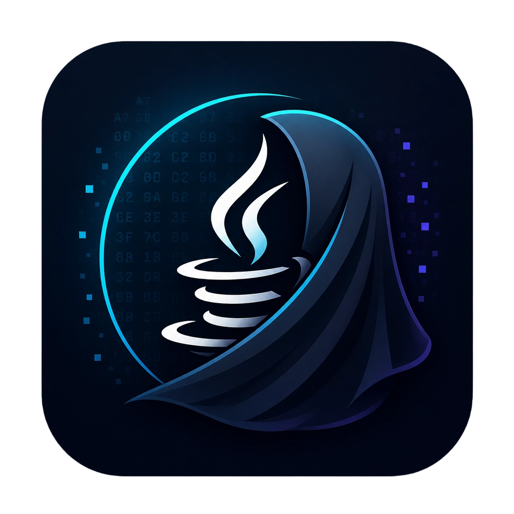

UNIVERSAL ARTIFACT · CROSS-PLATFORM VERIFICATION
WINDOWS POWERSHELL
SAME SHA-256 JAR
UBUNTU TERMINAL
RESULT MATCH
同一受保护 JAR。两套系统。三条一致结果。
VERIFIED

JavaShroud · OPEN SOURCE · GPL-3.0
01 · BUILD WITNESS
从可运行的 Java 样本开始。
Protection Workbench
Verified passes
Engine events
选择要保护的高价值方法。
WORKFLOW VISUALIZATION · REAL ENGINE EVIDENCE
02 · SOURCE / CFR
可读策略，进入经过变换的控制结构。
AccessPolicy.java
ORIGINAL · JAVA 17
↔
AccessPolicy.java
GATE
fixed policy day
SWITCH
tier risk
LOOP
risk signals
THRESHOLD
final decision
03 · VMBC VIRTUALIZATION
VMBC
· 同一逻辑，进入不同的执行形态。
DISPATCHER
TOKEN + ARGS
REAL JAVAP DISPATCHER TAIL
04 · CONTROL FLOW / STRINGS
真实字节码。真实检索结果。
AccessPolicy · javap -c -p
TABLESWITCH-HYBRID
MessageVault · literal scan
STRING PROTECTION
BASELINE DIRECT HITS
·
PROTECTED DIRECT HITS
· DIRECT LITERAL REMOVED
ACTUAL DECODER CALL
05 · PROTECTED ARTIFACT
一个 JAR。两套原生运行时。密封资源。
jar tf · VERIFIED ENTRIES
MiB
SHA-256 · SAME ON WINDOWS / LINUX
TOOLCHAIN CAPABILITIES
06 · RUNTIME PROOF
Windows x64 · Linux x64 · Java 17。
RESULT MATCH